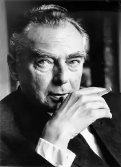
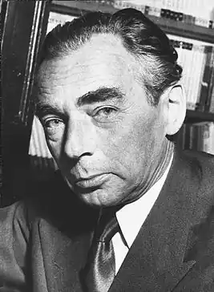

23.02.1899 року — 29.07.1974 року
Відомий німецький автор, сценарист, письменник і сатирик XX століття.
Кестнер народився в Дрездені на вулиці Кенигсбрюкер Штрассе, в будинку в якому зараз розташований музей, присвячений його творчості. Батько Кестнера був шкіряником, а його мати, Іда, була служницею і хатньою робітницею. Їй також довелося освоїти професію перукаря, щоб поповнювати убогий сімейний бюджет. Коли Еріх Кестнер жив у Берліні та Лейпцигу, він писав своїй матері дуже зворушливі листи і відправляв поштові листівки майже щодня. Напевно тому в романах Кестнера так часто зустрічається образ матері обтяженої. Ходили чутки, що не Еміль Кестнер був біологічним батьком Еріха, а навпаки, єврейський лікар Еміль Ціммерманн (1864-1953). Однак, ці чутки так і не знайшли свого підтвердження. У своїй автобіографії Коли я був маленьким хлопчиком (1957) написав, що він ніколи не був обтяжений тим, що він був єдиною дитиною в сім'ї, так як у нього завжди було багато друзів. У 1913 році Кестнер вступив у педагогічний коледж, але в 1916 р. він був змушений залишити навчання, так і не ставши учителем загальної школи. Німеччина вирувало в роки Першої світової війни, яка стала "кінцем дитинства" для Еріха Кестнера. В 1917 році Кестнер був покликаний в армію і приписаний до артилерійських військах. Суворі випробування новобранця, невидные кровопролитні битви і жахи війни сильно вплинули на його антимилитаристскую позицію Кестнера. До того ж безжальне звернення сержанта Вауриха під час курсу молодого бійця стало причиною серцевого недуги Еріха Кестнера. Після війни Кестнер повернувся до занять і з відзнакою закінчив школу, отримавши стипендію від муніципалітету Дрездена. Восени 1919 Кестнер почав вчитися в Університеті Лейпцига на факультетах історії, філософії, німецької мови та літератури і театру. Кестнер був змушений переїжджати з місця на місце при підготовці дисертації "Фрідріха великого і Німецька література", яку Кестнер захистив у 1925 році. Щоб оплатити своє навчання, Еріх Кестнер працював журналістом і театральним критиком у пристижной газеті Нойє Лайпцигер Цайтунг. Однак, його критика та публікація еротичної поеми "Вечірня пісня камерного віртуоза" стали приводом до його звільнення у 1927 р. У тому ж році Кестнер переїжджає в Берлін, продовжуючи писати на лейпцизькому газети під псевдонімом "Берхольд Бюргер". Вподальшому Кестнер буде користуватися іншими псевдонімами як "Мелхіор Куртц", "Пітер Флінт" і "Роберт Нойнер". До приходу нацистів до влади були найбільш плідними у творчості Кестнера. Всього за пару років в Берліні Еріх Кестнер став одним із найвідоміших інтелектуалів столиці. Він публікував поеми, газетні колонки, статті та огляди у відомих виданнях Берліна. У 1928 р. Кестнер опублікував свій перший збірник віршів Серце на поясі" ("auf Herz Taille), а до 1933 року у світ вийшло ще три збірки. Завдяки збірці "Лірика на кожен день", Кестнер став однією з провідних постатей німецького об'єктивізму (Neue Sachlichkeit). Восени 1928 р. Кестнер випустив дитячу книгу "Еміль та Детективи", яка розійшлася мільйонними тиражами і була переведена на 59 мов. Книга відрізнялася своєю реалістичністю і в 1933 Кестнер видав продовження "Еміль і троє близнюка". Дана серія стала початком нового жанру — дитячий детектив. Кестнер продовжував писати і публікувати дитячі оповідання: Літаюча класна кімната (1933) і Пюнктхен і Антон (1931), які ілюстрував Вальтер Трієр. У 1931 книга "Еміль та Детективи" була екранізована Герхардом Лампрехтом. Фільм мав великий успіх, проте Кестнер залишився незадоволений сценарієм. Кестнер написав лише один роман Фабіан (1931) більше схожий на сценарій фільму. Кестнер був пацифістом і писав для дітей, тому що вірив у творчу силу молоді. Хоча Кестнер був противником нацистського режиму, він, на відміну від своїх колег, не емігрував з Німеччини, щоб стати очевидцом подій зсередини. Кестнер кілька раз допитувався у гестапо, і він був вигнаний з гільдії письменників. Книги Кестнера спалювалися нацистами як "суперечливі духу Німеччини". Лише в 1942 р. Кестнеру дозволили написати сценарій до фільму Мюнхаузен. У 1944 р. його будинок у Берліні був зруйнований під час бомбардування. На початку 1945 р. він переїхав в Тіроль. Про свої переживання під час нацизму Кестнер видав щоденник Notabene 45 (1961). Після війни Кестнер переїхав в Мюнхен, де редагував місцеву газету Neue Zeitung і публікував юнацький журнал "Пінгвін". До того ж Кестнер працював на різних радіостанціях, написавши ряд пісень, скетчів, радіоп'єс, промов і есе на теми нацизму, Другої світової війни, суворих труднощів пост-військової Німеччини. Оптимізм Кестнера давав надію змученим німцям ФРН у відновленні їх батьківщини. Після "економічного дива" ФРН вступає в НАТО, що ніяк не втішило пацифіста Кестнера. Він також був проти Війни у В'єтнамі. Кестнер не вступав ні в які літературні суспільства, залишаючись дитячим письменником. Повторне відкриття творчості Кестнера сталося в 70-х роках, коли всі його книги були екранізовані. Кестнер був лауреатом багатьох літературних премій, президентом різних товариств т. д. Кестнер не був одружений, хоча свої останні дитячі книги він написав для свого сина, Томаса Кестнера, який народився у 1957 р. Кестнер також записував і читав свої твори на радіо. У фільмах він охоче брав ролі оповідачів. Еріх Кестнер помер у лікарні Нойперлах (Neuperlacher Krankenhaus) 29 липня 1974 і був похований на кладовищі Святого Георгія в Мюнхені.